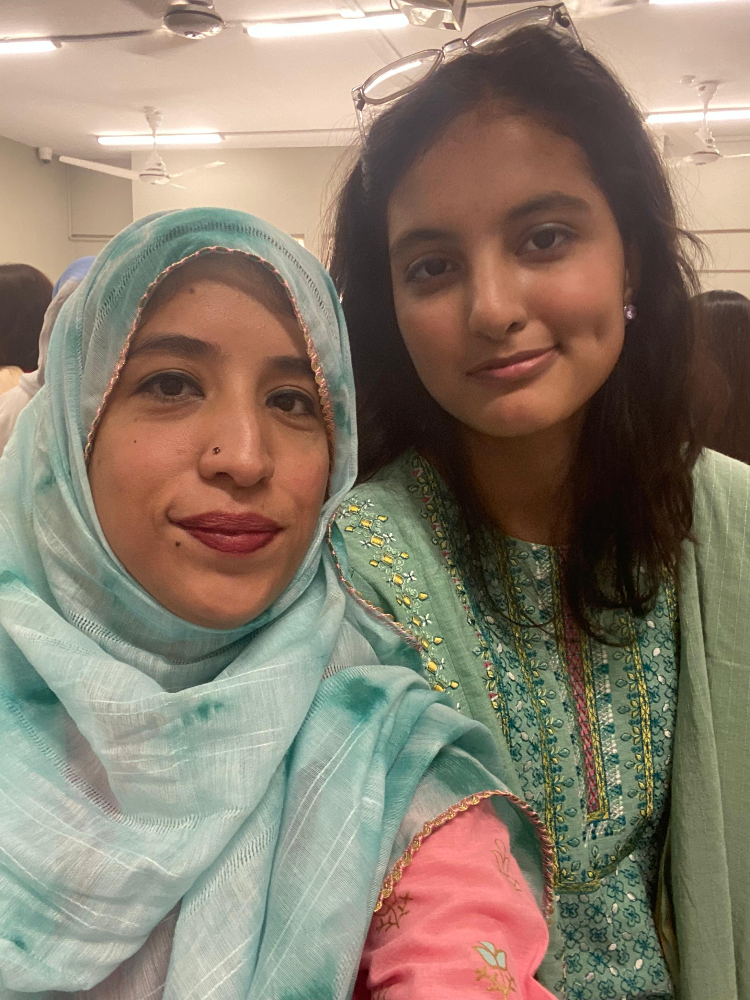

The Things I Didn't See
A little description...
A COLLECTION OF LITTLE THINGS
A little collection of words, memories and things left unsaid.

A moment worth keeping ♡
CHAPTER 01 · THE BEGINNING
This space is a collection of thoughts, words, memories and feelings that deserved somewhere to live.
Some things are easier to write than to say. So, here they are.
✿CHAPTER 02 · WORDS
A few words, each with a story of its own.
A little description...
A little description...
A LITTLE CLASSROOM ENTERTAINMENT
Think you know your way around a classroom? Let's find out.
Five questions. Four options each. One chance to prove yourself.
A LITTLE NAME, A LITTLE WORLD
Some names are given casually. Others stay with you. Chaand was one of those names. A little word she used for the students she held especially close. Perhaps she never realised how much affection could be tucked into something so simple.
And perhaps, being someone's chaand is simply another way of being reminded that you mattered.
✧ ✦ ✧CHAPTER 04 · UNSENT WORDS
For everything you helped me see,
and everything I am still learning to become.
With gratitude, always.UNTIL THE NEXT CHAPTER
Some things are too meaningful to leave unsaid.
✿